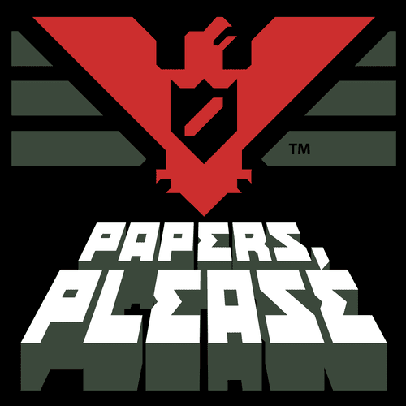

Papers, Please
Papers, Please is a puzzle-simulation game by Lucas Pope where you work as a border inspector in the fictional communist country of Arstotzka. Players review documents and decide who may enter while supporting their family under political pressure and moral dilemmas.